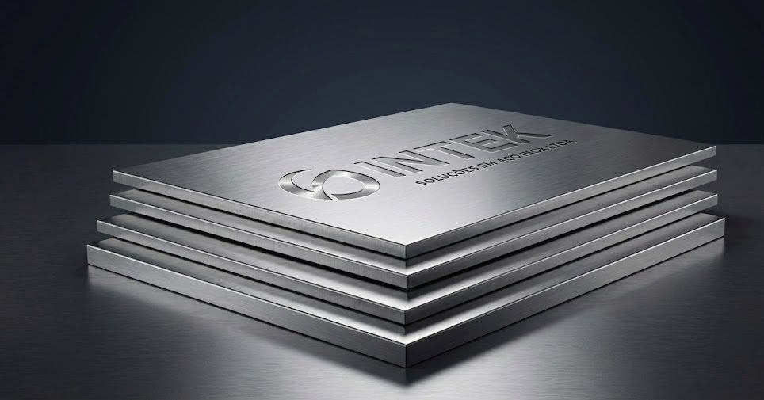

Versatilidade e durabilidade para diversas aplicações

Chapas de aço inoxidável laminadas a frio ou a quente, ideais para revestimentos, tanques, equipamentos industriais e arquitetura. Oferecemos corte sob medida e diversos acabamentos superficiais.
0,40mm a 50,00mm
304, 304L, 316L, 430, 444
2B, BA, No. 1, No. 4 (Escovado)
Padrão e Cortes Especiais
Peso teórico por metro quadrado (kg/m²)
| Espessura (mm) | Peso Teórico (kg/m²) |
|---|---|
| 0,40 mm | 3,20 |
| 0,50 mm | 4,00 |
| 0,60 mm | 4,80 |
| 0,80 mm | 6,40 |
| 1,00 mm | 8,00 |
| 1,20 mm | 9,60 |
| 1,50 mm | 12,00 |
| 2,00 mm | 16,00 |
| 2,50 mm | 20,00 |
| 3,00 mm | 24,00 |
| 4,00 mm | 32,00 |
| 4,75 mm | 38,00 |
| 6,35 mm | 50,80 |
| 8,00 mm | 64,00 |
| 9,52 mm | 76,16 |
| 12,70 mm | 101,60 |
Entregamos suas chapas cortadas e dobradas conforme projeto.
Solicitar Cotação